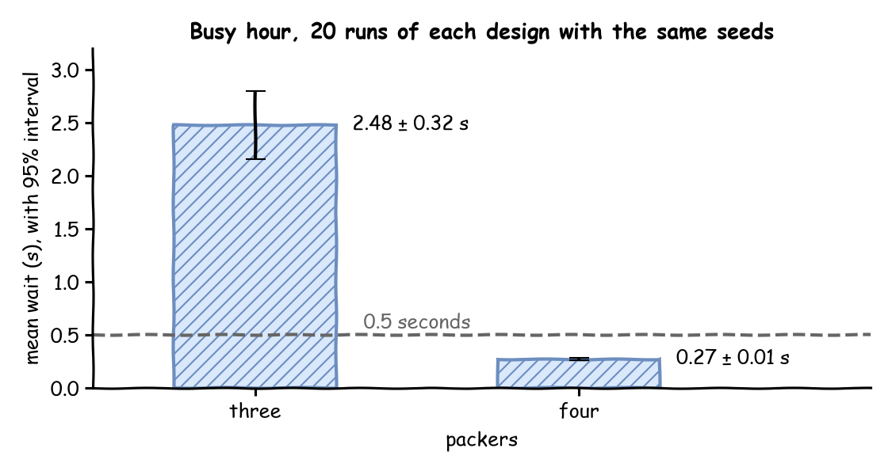

Trusting Results measured the busy hour with three packers: over 40 replications the mean wait was 2.32 ± 0.20 seconds. The shop could hire a fourth packer. This page asks: does a fourth packer cut the mean wait, and by how much?
Decision: three packers or four.
Measures: the mean wait and the packers' utilisation.
Runs: the busy hour after its 2-minute warm-up, 20 replications of each design with the same seeds, spawned from 42. The rest of the day is not modelled.
Assumptions: those of Trusting Results: orders at random at 1.8 a second, and the 40 packing times measured at the bench.
What You Will Learn
This page shows how to:
write an experiment that names the model, the designs, a comparison and a check;
compare two designs with the same seeds;
read the difference with its interval, and the report.
What You Add
This page adds an experiment: a file in YAML, or a mapping in Python, that names the model, the two designs, the comparison and a check. The model is the busy hour of Trusting Results, unchanged.
Name the Model
An experiment runs a model written in any of the three ways, for a number of replications from one seed:
# The function that builds the busy hour, and its 2-minute warm-up"model":LowLevelModel(model,sim_id="Shop"),"warmup":WARMUP,"until":3600,"replications":20,"seed":42,
The low-level model has no warm-up of its own, so the experiment gives it one.
Compare Two Designs
Each variant names the registry values it changes before the clock starts. three changes nothing, so it is the busy hour as written. four sets the packers' capacity to 4. pairing: common gives both designs the same 20 seeds, and compare asks for their difference seed by seed:
# Every design runs with the same 20 seeds, so they are compared seed by seedpairing:commonmeasures:[tasks.pack_order.wait_mean,resources.packers.utilization_avg]variants:three:{}four:{Shop.resources.packers.current_cap:4}compare:-{baseline:three, variant:four}
# Every design runs with the same 20 seeds, so they are compared seed by seed"pairing":"common","measures":["tasks.pack_order.wait_mean","resources.packers.utilization_avg"],"variants":{"three":{},"four":{"Shop.resources.packers.current_cap":4}},"compare":[{"baseline":"three","variant":"four"}],
The same keys, in the same mapping as the model.
Save the files from Full Files in one folder and run the commands there:
The experiment runs 40 replications, 20 of each design, and writes what it found to results/four-packers. The command prints only where it wrote and the result of the check. Open results/four-packers/report.md: its Results and Comparisons sections hold the two tables below. Each design's results, with the 95% half-width:
Design
Mean wait (s)
Utilisation (%)
three
2.48 ± 0.32
90.33 ± 0.63
four
0.27 ± 0.01
67.70 ± 0.46
The three-packer design ran with the first 20 of the seeds that Trusting Results used. Its row therefore equals that page's figure for 20 replications, not its mean of 2.32 seconds over 40. Busy Hour Figures lists both. The comparison gives the four-packer value minus the three-packer value, seed by seed:
Measure
Difference
Half-width
Random streams
tasks.pack_order.wait_mean
-2.21 s
0.31 s
2 shared
resources.packers.utilization_avg
-22.63 percentage points
0.17 percentage points
2 shared
The difference in utilisation has a half-width of 0.17 percentage points, although each design's own utilisation has a half-width of 0.63 or 0.46. The same seed gives both designs the same arrivals and packing times, so a busy run of one design is a busy run of the other. Their difference therefore leaves out most of the variation that comes from chance. Running every design with the same seeds is called common random numbers. The difference in waits has a half-width of 0.31 seconds, about the same as the half-width of the three-packer wait, 0.32 seconds. With four packers the wait hardly varies, so the difference varies about as much as the three-packer wait does.
"2 shared" says both designs drew from the same two random streams, arrival.orders and service.packing. desflow records which streams each run drew from. It lists any stream that only one design used, such as the stream of a gift-wrap step that only one design has, because draws from such a stream are not paired. With pairing: independent each design gets seeds of its own instead. A comparison is then refused, because no seed pairs one run of each design.
Check the Answer
A check states what the answer must be. This one asks for a mean wait under half a second with four packers:
# The upper end of the interval must be under half a second"checks":[{"measure":"tasks.pack_order.wait_mean","variant":"four","max":0.5}],
The same key, in the same mapping.
A check compares its bound with the end of the interval that is nearer to failing it, here the upper end. A mean that is below the bound only by chance has an upper end above the bound, so it does not pass. The upper end is 0.286 seconds, so the check passes. When a check fails, desflow experiment still writes every file, then exits with status 1, and run_experiment raises CheckFailed. Either way, a script or a CI job stops at the failed check.
Read the Report
The experiment writes report.md beside its results. It states the question, the model and its versions, the assumptions, each input distribution with where it came from, the run settings, the counts, the results, the comparison and the checks, and what the experiment does not state. The experiment file names its assumptions, the source of its inputs and its limits:
assumptions:-Orders arrive at random, at a steady 1.8 a second, through the busy hour.-The 40 packing times measured at the bench stand for every packer.inputs:Shop.service.packing:40 packing times measured at the bench, in secondslimits:-One busy hour only; the rest of the day is not modelled.output:results/four-packers
The experiment states where the packing times came from but not the arrival rate, so the report's Missing Inputs section says: "The provenance of Shop.arrival.orders is not stated." It names the gap rather than filling it in. Experiments lists every file and section.
output in the experiment file names the results folder. --output names another folder for one run, so a second run keeps the results of the first. desflow report builds report.md again from the other files in a results folder, with no new run, such as after editing experiment.json by hand. output= in run_experiment names the folder in Python:
The mean wait of each design over its 20 replications, with its 95% interval:

Does a fourth packer cut the mean wait, and by how much? Yes. Over 20 replications of each design after the 2-minute warm-up, with the same seeds, a fourth packer cuts the busy hour's mean wait by 2.21 ± 0.31 seconds, from 2.48 to 0.27 seconds. The packers are busy 22.63 ± 0.17 percentage points less of the time. The whole interval of the difference is below zero, and the four-packer wait stays under the half-second bound.
Two designs run with different seeds differ by the design and by chance, and the chance part can hide a small effect. With the same seeds, each pair of runs has the same arrivals and the same packing times, so the chance part partly cancels in their difference, as Output Analysis explains. Each difference comes from a seed of its own, so the 20 differences are independent of each other, and the interval is a Student t interval on them.
Key Takeaways
Running both designs with the same seeds makes the chance part of their difference partly cancel.
The difference between two designs has its own interval. An interval that lies wholly below or wholly above zero shows a difference that chance alone does not explain, at 95% confidence.
A check in the experiment turns the decision rule into a test that passes or fails.
# The Comparing Designs tutorial: does a fourth packer cut the busy hour's mean wait?# Run it with: desflow experiment comparing_designs_experiment.yaml# Each design separately: change pairing to independent and remove compare.experiment:four-packersquestion:Does a fourth packer cut the mean wait of the busy hour, and by how much?# The busy hour of Trusting Results, with its 2-minute warm-upmodel:trusting_results.yamluntil:1 hreplications:20seed:42# Every design runs with the same 20 seeds, so they are compared seed by seedpairing:commonmeasures:[tasks.pack_order.wait_mean,resources.packers.utilization_avg]variants:three:{}four:{Shop.resources.packers.current_cap:4}compare:-{baseline:three, variant:four}checks:# The upper end of the interval must be under half a second-{measure:tasks.pack_order.wait_mean, variant:four, max:0.5}assumptions:-Orders arrive at random, at a steady 1.8 a second, through the busy hour.-The 40 packing times measured at the bench stand for every packer.inputs:Shop.service.packing:40 packing times measured at the bench, in secondslimits:-One busy hour only; the rest of the day is not modelled.output:results/four-packers
# The Trusting Results tutorial: the busy hour, measured after a warm-up.# Run it with: desflow run trusting_results.yaml# Without the warm-up: WARMUP=0 desflow run trusting_results.yamlsimulation:sim_id:Shopfactor:0random_seed:42# Records and statistics start after the first 2 minutes; 0 keeps everythingwarmup:${WARMUP:-2 min}resources:packers:{current_cap:3, max_cap:10}arrivals:orders:{dist:exponential, rate:1.8, spawn:pack_order}services:# The 40 packing times measured at the bench, in secondspacking:dist:empiricalvalues:[1.5,2.5,2.4,1.2,1.3,1.2,1.8,1.4,2.0,0.7,2.7,1.4,1.9,1.4,1.3,1.8,2.0,1.4,1.4,1.9,1.1,0.8,1.7,1.1,0.7,1.1,1.2,0.9,0.8,1.5,2.1,1.3,1.1,1.7,1.9,1.3,1.8,2.2,1.4,1.1]tasks:pack_order:service:packingresource:packerspayload:{event_type:order_packed}# Every 10 seconds, wait_mean is the mean wait so far: plot it against sim_tsstats:{level:typical, interval:10}egress:-type:Consolerun:until:1 h
"""The Comparing Designs tutorial: a fourth packer, builder.Runs the busy hour of Trusting Results 20 times with three packers and 20 times withfour, with the same seeds, and compares the two designs seed by seed. The experimentwrites its artifacts and report to results/four-packers, and the script prints thecomparison and the check."""importloggingfromdesflowimportrun_experimentfromtrusting_resultsimportshop# The imported model logs at INFO; an experiment logs only its warningslogging.getLogger("desflow").setLevel(logging.WARNING)EXPERIMENT={"experiment":"four-packers","question":"Does a fourth packer cut the mean wait of the busy hour, and by how much?",# A function returning a new busy hour, with its 2-minute warm-up"model":shop,"until":"1 h","replications":20,"seed":42,# Every design runs with the same 20 seeds, so they are compared seed by seed"pairing":"common","measures":["tasks.pack_order.wait_mean","resources.packers.utilization_avg"],"variants":{"three":{},"four":{"Shop.resources.packers.current_cap":4}},"compare":[{"baseline":"three","variant":"four"}],# The upper end of the interval must be under half a second"checks":[{"measure":"tasks.pack_order.wait_mean","variant":"four","max":0.5}],"assumptions":["Orders arrive at random, at a steady 1.8 a second, through the busy hour.","The 40 packing times measured at the bench stand for every packer.",],"inputs":{"Shop.service.packing":"40 packing times measured at the bench, in seconds"},"limits":["One busy hour only; the rest of the day is not modelled."],"output":"results/four-packers",}defexperiment(pairing="common",output=None):"""Runs the experiment; independent pairing gives each design seeds of its own."""settings=dict(EXPERIMENT,pairing=pairing)ifpairing=="independent":settings["compare"]=[]# a comparison needs the same seedsreturnrun_experiment(settings,output=output)if__name__=="__main__":result=experiment()forrowinresult.comparisons:print(f"{row['measure']}: {row['difference']:.2f} ± {row['half_width']:.2f}")forrowinresult.checks:print(f"check {row['design']}: {row['value']:.3f} passed={row['passed']}")
"""The Trusting Results tutorial: the busy hour, measured after a warm-up, builder.Three packers pack orders that arrive at 1.8 a second on average, with the packingtimes measured at the bench. Every record is printed to the terminal. At the end thescript prints the mean wait without and with the warm-up, the mean wait of 5 runsafter each of three candidate warm-ups, then the mean and half-width of two outputsover 5, 10, 20 and 40 replications. To see only those lines, run:python trusting_results.py 2>/dev/null"""importloggingfromdesflowimportConsoleEgress,SimulationContext,replicatefromdesflow.analysisimportintervallogging.basicConfig(level=logging.INFO,format="%(levelname)s [%(asctime)s] %(message)s")# The 40 packing times measured at the bench, in secondsMEASURED=[1.5,2.5,2.4,1.2,1.3,1.2,1.8,1.4,2.0,0.7,2.7,1.4,1.9,1.4,1.3,1.8,2.0,1.4,1.4,1.9,1.1,0.8,1.7,1.1,0.7,1.1,1.2,0.9,0.8,1.5,2.1,1.3,1.1,1.7,1.9,1.3,1.8,2.2,1.4,1.1,]# fmt: skipdefshop(warmup="2 min")->SimulationContext:"""The busy hour; records and statistics start after `warmup`."""app=(# Records and statistics start after the first 2 minutes; None keeps everythingSimulationContext(sim_id="Shop",factor=0,random_seed=42,warmup=warmup).add_resource("packers",current_cap=3,max_cap=10).add_arrival("orders",dist="exponential",rate=1.8).add_service("packing",dist="empirical",values=MEASURED)# Every 10 seconds, wait_mean is the mean wait so far: plot it against sim_ts.with_stats("typical",interval=10).add_egress(ConsoleEgress()))@app.task(service_id="packing",resource_id="packers")defpack_order(task_id:int):return{"event_type":"order_packed"}@app.arrival_loop("orders")deforder_generator(context:SimulationContext):task_id=0whileTrue:order=yieldcontext.wait_for_arrival("orders")context.spawn(pack_order(task_id,entity=order))task_id+=1returnappdefmean_wait(warmup)->float:"""Runs the busy hour and returns the mean wait it measured."""app=shop(warmup)app.run(until="1 h")returnapp.env.stats.readings()["Shop.stats.tasks.pack_order.wait_mean"]MEASURES=["tasks.pack_order.wait_mean","resources.packers.utilization_avg"]defreplications(n=40):"""Runs the busy hour n times, each after the warm-up, with seeds spawned from 42."""returnreplicate(shop,n,seed=42,until="1 h",measures=MEASURES)defwarmups(n=5)->dict:"""The mean wait of n runs after each candidate warm-up, with seeds spawned from 42."""wait=["tasks.pack_order.wait_mean"]return{warmup:replicate(shop,n,seed=42,until="1 h",warmup=warmup,measures=wait)forwarmupin("1 min","2 min","4 min")}defprecision(result)->dict:"""Each output's mean and half-width over the first 5, 10, 20 and 40 replications."""return{(measure,n):interval(result.values[measure][:n])formeasureinMEASURESfornin(5,10,20,40)}if__name__=="__main__":print(f"without a warm-up: mean wait {mean_wait(None):.3f} s")print(f"with a 2 min warm-up: mean wait {mean_wait('2 min'):.3f} s")forwarmup,resultinwarmups().items():row=result.summary[0]print(f"warm-up {warmup}: mean wait {row['mean']:.3f} ± {row['half_width']:.2f} s")for(measure,n),resultinprecision(replications()).items():share=result.half_width/result.meanprint(f"{measure}, {n} runs: {result.mean:.2f} ± {result.half_width:.2f} ({share:.1%})")
"""The Comparing Designs tutorial: a fourth packer, low-level.Runs the busy hour of Trusting Results 20 times with three packers and 20 times withfour, with the same seeds, and compares the two designs seed by seed. The experimentwrites its artifacts and report to results/four-packers, and the script prints thecomparison and the check."""importloggingfromdesflowimportLowLevelModel,run_experimentfromtrusting_results_low_levelimportWARMUP,model# The imported model logs at INFO; an experiment logs only its warningslogging.getLogger("desflow").setLevel(logging.WARNING)EXPERIMENT={"experiment":"four-packers","question":"Does a fourth packer cut the mean wait of the busy hour, and by how much?",# The function that builds the busy hour, and its 2-minute warm-up"model":LowLevelModel(model,sim_id="Shop"),"warmup":WARMUP,"until":3600,"replications":20,"seed":42,"pairing":"common","measures":["tasks.pack_order.wait_mean","resources.packers.utilization_avg"],"variants":{"three":{},"four":{"Shop.resources.packers.current_cap":4}},"compare":[{"baseline":"three","variant":"four"}],"checks":[{"measure":"tasks.pack_order.wait_mean","variant":"four","max":0.5}],"assumptions":["Orders arrive at random, at a steady 1.8 a second, through the busy hour.","The 40 packing times measured at the bench stand for every packer.",],"inputs":{"Shop.service.packing":"40 packing times measured at the bench, in seconds"},"limits":["One busy hour only; the rest of the day is not modelled."],"output":"results/four-packers",}defexperiment(pairing="common",output=None):"""Runs the experiment; independent pairing gives each design seeds of its own."""settings=dict(EXPERIMENT,pairing=pairing)ifpairing=="independent":settings["compare"]=[]# a comparison needs the same seedsreturnrun_experiment(settings,output=output)if__name__=="__main__":result=experiment()forrowinresult.comparisons:print(f"{row['measure']}: {row['difference']:.2f} ± {row['half_width']:.2f}")forrowinresult.checks:print(f"check {row['design']}: {row['value']:.3f} passed={row['passed']}")
"""The Trusting Results tutorial: the busy hour, measured after a warm-up, low-level.Three packers pack orders that arrive at 1.8 a second on average, with the packingtimes measured at the bench. Every record is printed to the terminal. At the end thescript prints the mean wait without and with the warm-up, the mean wait of 5 runsafter each of three candidate warm-ups, then the mean and half-width of two outputsover 5, 10, 20 and 40 replications. To see only those lines, run:python trusting_results_low_level.py 2>/dev/null"""importloggingfromdesflowimport(CapacityConfig,ConsoleEgress,DistributionConfig,DynamicRealtimeEnvironment,DynamicResource,LowLevelModel,Sampler,SimParameter,replicate,)fromdesflow.analysisimportintervallogging.basicConfig(level=logging.INFO,format="%(levelname)s [%(asctime)s] %(message)s")# The 40 packing times measured at the bench, in secondsMEASURED=[1.5,2.5,2.4,1.2,1.3,1.2,1.8,1.4,2.0,0.7,2.7,1.4,1.9,1.4,1.3,1.8,2.0,1.4,1.4,1.9,1.1,0.8,1.7,1.1,0.7,1.1,1.2,0.9,0.8,1.5,2.1,1.3,1.1,1.7,1.9,1.3,1.8,2.2,1.4,1.1,]# fmt: skipPARAMS=SimParameter(sim_id="Shop",arrival={"orders":DistributionConfig(dist="exponential",rate=1.8)},service={"packing":DistributionConfig(dist="empirical",values=MEASURED)},resources={"packers":CapacityConfig(current_cap=3,max_cap=10)},)defpack_order(env,sampler,packers,key,task_id):"""One order, which reports each step to the statistics."""path_id="Shop.service.packing"defpublish(value):env.publish_event(key,value,task="pack_order",instance=task_id)publish({"path_id":path_id,"status":"queued"})env.stats.flow_started("orders")# the order enters the shopenv.stats.task_queued("pack_order",task_id)withpackers.request()asrequest:yieldrequestpublish({"path_id":path_id,"status":"started"})env.stats.task_started("pack_order",task_id)yieldenv.timeout(sampler.sample(env.registry.get_config(path_id)))publish({"event_type":"order_packed"})env.stats.task_finished("pack_order",task_id)env.stats.flow_finished("orders")# the order leaves the shopdeforder_generator(env,sampler,packers):arrival=env.registry.get_config("Shop.arrival.orders")task_id=0whileTrue:yieldenv.timeout(sampler.sample(arrival))env.process(pack_order(env,sampler,packers,f"orders-{task_id+1}",task_id))task_id+=1# Records and statistics start after the first 2 minutes; None keeps everythingWARMUP=120.0# seconds, passed to setup_egress in run belowdefrun(warmup=WARMUP,until=3600,factor=0.0):env=DynamicRealtimeEnvironment(factor=factor)env.registry.register_sim_parameter(PARAMS)# Every 10 seconds, wait_mean is the mean wait so far: plot it against sim_tsenv.setup_stats("Shop","typical",interval=10)# The warm-up is set with the sinks: no sink receives a record stamped before it# ends, and the statistics start again from zero when it endsenv.setup_egress([ConsoleEgress()],warmup=warmup)packers=DynamicResource(env,"Shop","packers")env.process(order_generator(env,Sampler(seed=42),packers))try:env.run(until=until)finally:env.teardown()returnenvdefmean_wait(warmup)->float:"""Runs the busy hour and returns the mean wait it measured."""returnrun(warmup).stats.readings()["Shop.stats.tasks.pack_order.wait_mean"]MEASURES=["tasks.pack_order.wait_mean","resources.packers.utilization_avg"]defmodel(env,sampler):"""The busy hour in a given environment: replicate sets the statistics."""env.registry.register_sim_parameter(PARAMS)packers=DynamicResource(env,"Shop","packers")env.process(order_generator(env,sampler,packers))defreplications(n=40):"""Runs the busy hour n times, each after the warm-up, with seeds spawned from 42."""shop=LowLevelModel(model,sim_id="Shop")returnreplicate(shop,n,seed=42,until=3600,warmup=WARMUP,measures=MEASURES)defwarmups(n=5)->dict:"""The mean wait of n runs after each candidate warm-up, with seeds spawned from 42."""shop=LowLevelModel(model,sim_id="Shop")wait=["tasks.pack_order.wait_mean"]return{warmup:replicate(shop,n,seed=42,until=3600,warmup=warmup,measures=wait)forwarmupin(60,WARMUP,240)}defprecision(result)->dict:"""Each output's mean and half-width over the first 5, 10, 20 and 40 replications."""return{(measure,n):interval(result.values[measure][:n])formeasureinMEASURESfornin(5,10,20,40)}if__name__=="__main__":print(f"without a warm-up: mean wait {mean_wait(None):.3f} s")print(f"with a 2 min warm-up: mean wait {mean_wait(WARMUP):.3f} s")forwarmup,resultinwarmups().items():row=result.summary[0]print(f"warm-up {warmup:g} s: mean wait {row['mean']:.3f} ± {row['half_width']:.2f} s")for(measure,n),resultinprecision(replications()).items():share=result.half_width/result.meanprint(f"{measure}, {n} runs: {result.mean:.2f} ± {result.half_width:.2f} ({share:.1%})")